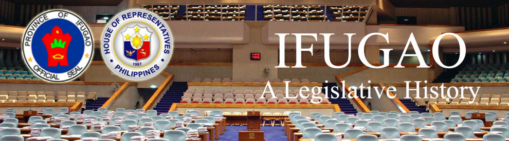

| History |
| Legislators |
| Laws |
| About |
 |
IFUGAO
The following text/information are lifted from the book of Lee W. Vance entitled Tracing your Philippine Ancestors which was published in Provo, Utah by Stevenson’s Genealogical Center in 1980 and Symbols of the State by the Department of Interior and Local Government of the Republic of the Philippines in 1998.
The province of Ifugao lies amid the central Cordillera Mountains of nothern Luzon in the northern Philippines. It is bounded on the north by Mountain Province, on the east by Isabela, on the south by Nueva Vizcaya, and on the west by Benguet.
Ifugao has a land area of 2,628.2 square kilometers. In 2007, it had a population 180,711.
Following is a timeline1,2 of events that led to the creation and development of the province of Ifugao:
| DATE | EVENT |
|
The province of Ifugao was created that is originally part of the territory of Nueva Vizcaya. |
|
Kiangan mission was first established. |
|
The Spanish authorities began a concerted effort to subjugate and Christianize the people in the inner mountainous regions of Luzon. |
|
The visita of Lagawe was first established and opened intermittently after. |
|
A politico-military comandancia was established in Quiangan (Kiangan). |
|
The comandancia in Quiangan (Kiangan) included the pueblos of Magulang, Sapao, Bucaue, Lagaui, and Quiangan. |
|
Under the Philippine Legislative Act No. 1876, the territory of Ifugao corresponding the former comandancia of Quiangan was detached from Nueva Vizcaya and annexed as a sub-province to the newly created Mountain Province. |
|
The Christianization of the area effectively began in under the missionaries of the Immaculate Heart of Mary (CICM Fathers), sent by the Sacred Congregation de Propaganda Fide. |
|
General Tomoyoki Yamashita, commander of the Japanese Imperial Army in the Philippines, retreated to Ifugao before finally surrendering to the joint Filipino-American forces in Kiangan. |
|
By virtue of Republic Act 4695, Ifugao sub-province was separated from Mountain Province and became a regular province. Simultaneously, Benguet, Kalinga-Apayao, and Bontoc (renamed Mountain Province), became provinces. At that time, Ifugao consisted of the municipalities of Lagawe (the capital), Banaue, Hungduan, Kiangan, Lamut, Mayaoyao and Potia. |
|
By virtue of BATAS PAMBANSA 86, the Municipality of Aguinaldo was created. |
|
By virtue of BATAS PAMBANSA 184, the Municipality of Tinoc was created. |
|
By virtue of BATAS PAMBANSA 239, the Municipality of Hingyon was created. |
|
By virtue of REPUBLIC ACT 6687, the Municipality of Potia was changed into Lista and confirmed the Barangay of Sta. Maria as the seat of the government of the municipality. |
|
Ifugao constitutes a lone district that includes the municipalities of Aguinaldo, Alfonso Lista (Potia), Banaue, Hingyon, Hungduan, Kiangan, Lagawe, Lamut, Mayoyao and Tinoc. |
Sources:
1 Vance, L. W. (1980). Tracing your Philippine ancestors. Provo, Utah: Stevenson's Genealogical Center.
2 Velasco, C. R. and Untivero, R. G. (1998). Symbols of the State. Manila: National Media Production Center.

Congressional Library Bureau
Legislative Library Service